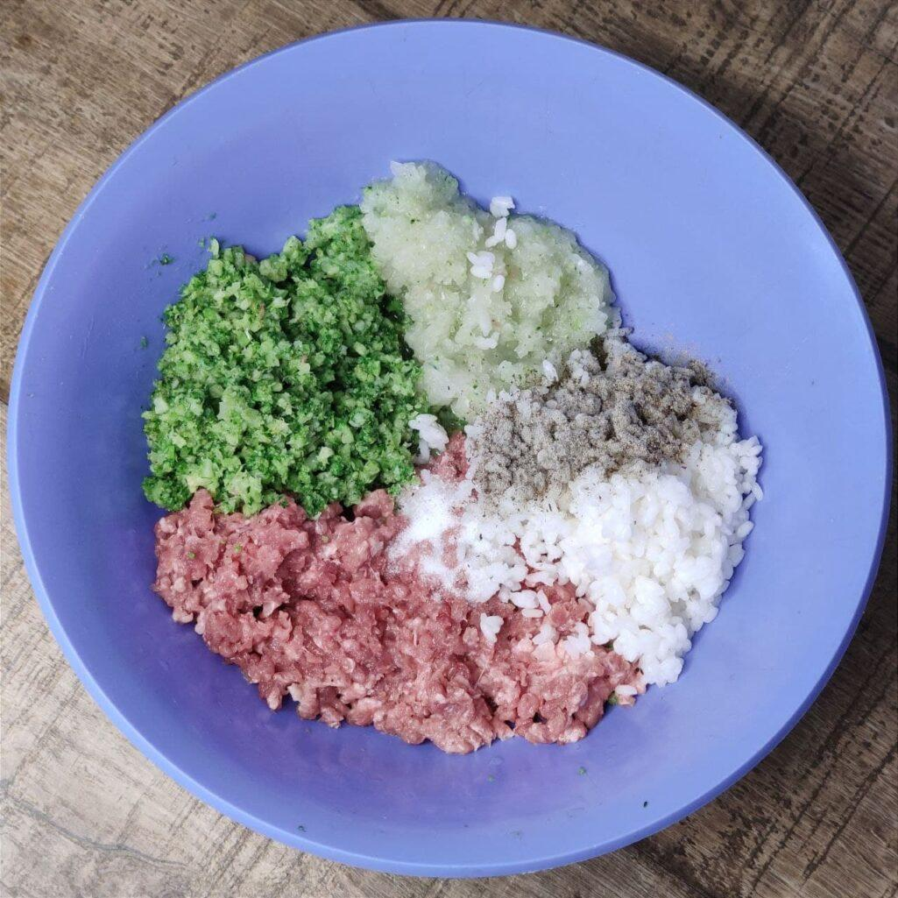

Ленивые голубцы – это очень вкусное и простое блюдо, которое стоит приготовить хотя бы один раз. Традиционно ленивые голубцы готовят из фарша, белокочанной капусты и риса, обжаривают на сковороде или запекают в духовке.
Предлагаю вам свой необычный, но очень вкусный и интересный вариант ленивых голубцов. За основу я взяла мясо индейки, а обычную капусту заменила на брокколи. Готовила не на сковороде, а в духовке под томатно-сметанной заливкой. Получилось не только вкусно, но еще и очень сочно, а также вполне себе ППшно.
1. Брокколи разделить на соцветия и бланшировать в кипящей воде 7 минут, затем обдать ледяной водой. Рис отварить до полуготовности (соотношение риса и воды 1:1,5).
2. Брокколи, крупно нарезанные филе бедра индейки и лук пропустить через мясорубку. Добавить к фаршу готовый рис, соль, перец и хорошенько перемешать до однородности.
3. Морковь нарезать крупными кусочками в произвольной форме (если не хотите морковь, то можно исключить её из блюда).
4. Из фарша слепить объёмные и продолговатые голубцы, уложить их в смазанную форму для запекания и в свободные места выложить морковь.
5. Для заливки смешать томатную пасту, сметану, воду, посолить и поперчить по вкусу, добавить сушёную зелень, затем залить ею голубцы. Форму для запекания накрыть фольгой и запекать в разогретой до 180°С духовке 30-35 минут.
Совет к рецепту:
Подавайте ленивые голубцы с картофельным пюре и соусом, в котором они томились.
Автор рецепта: Diana FoodLover